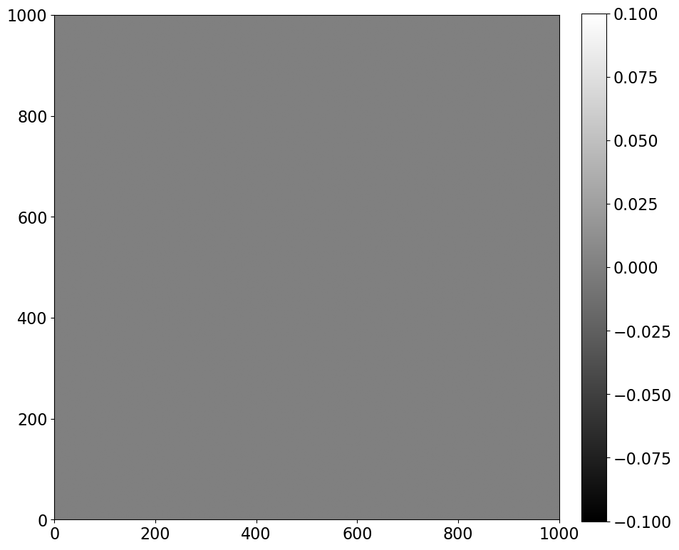
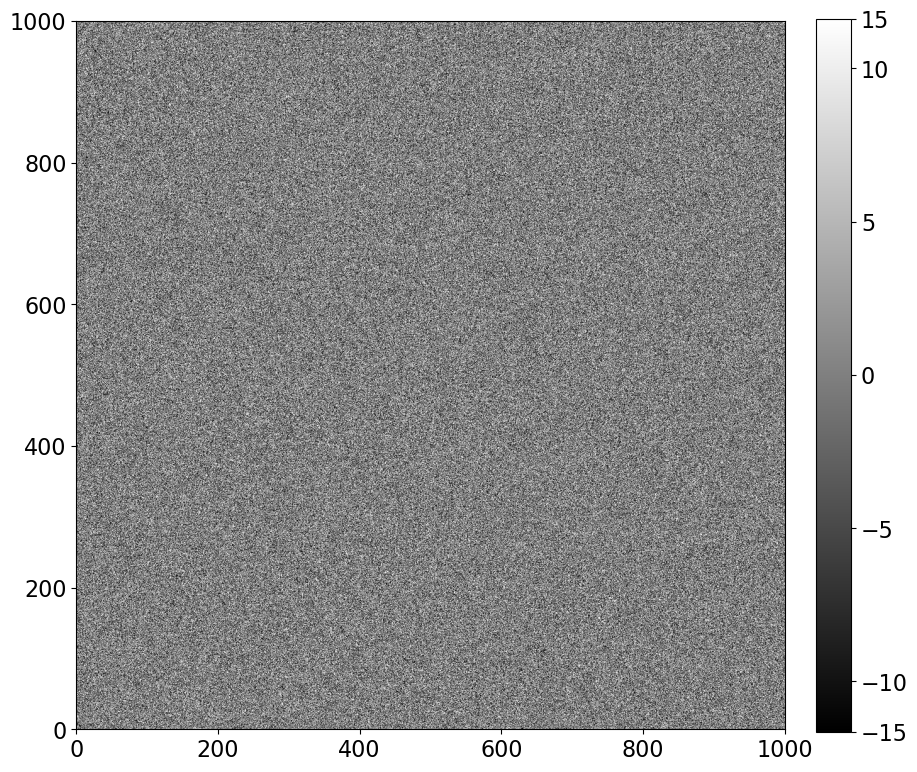
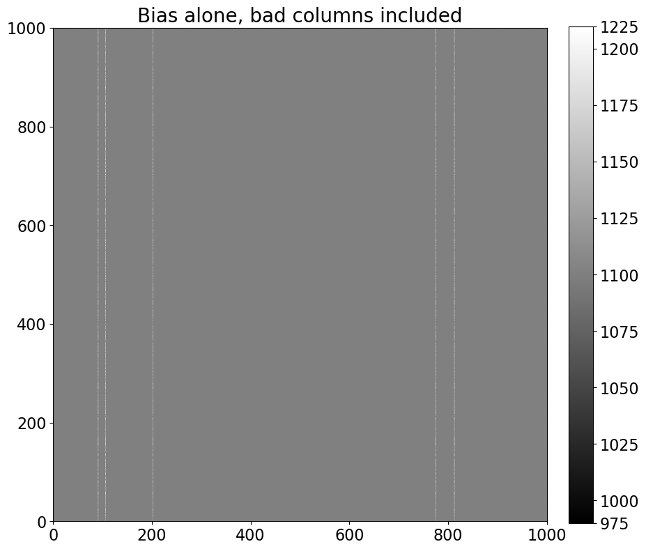
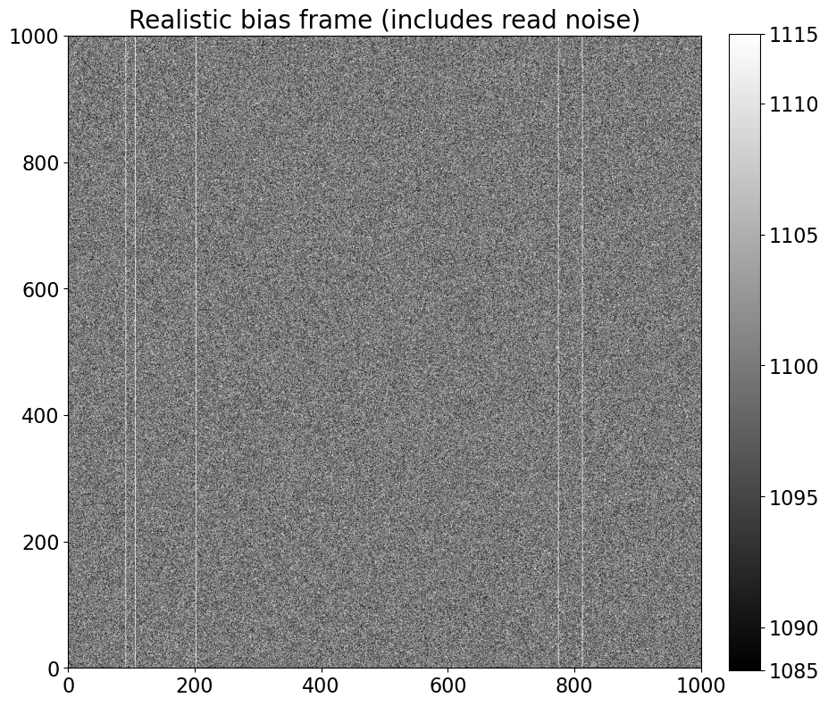
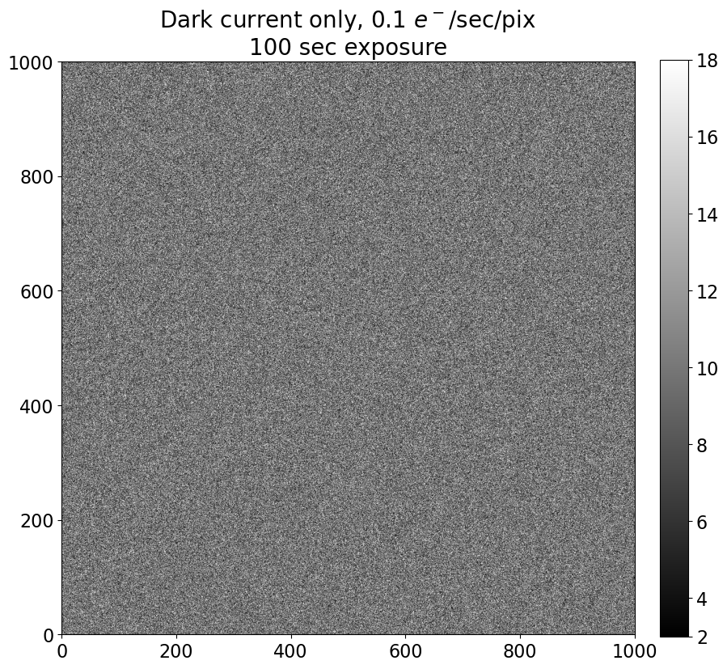
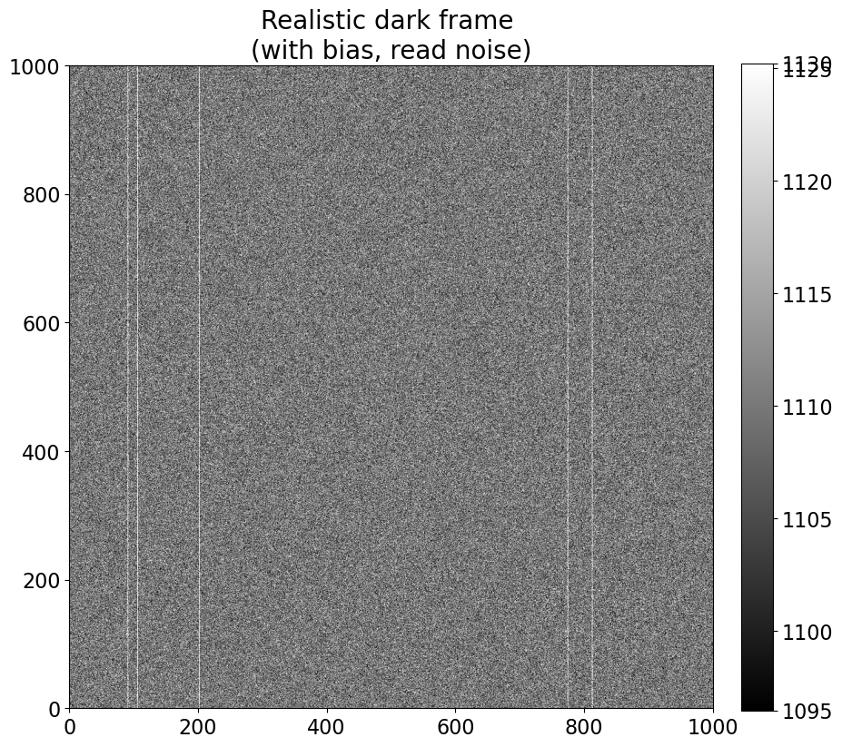
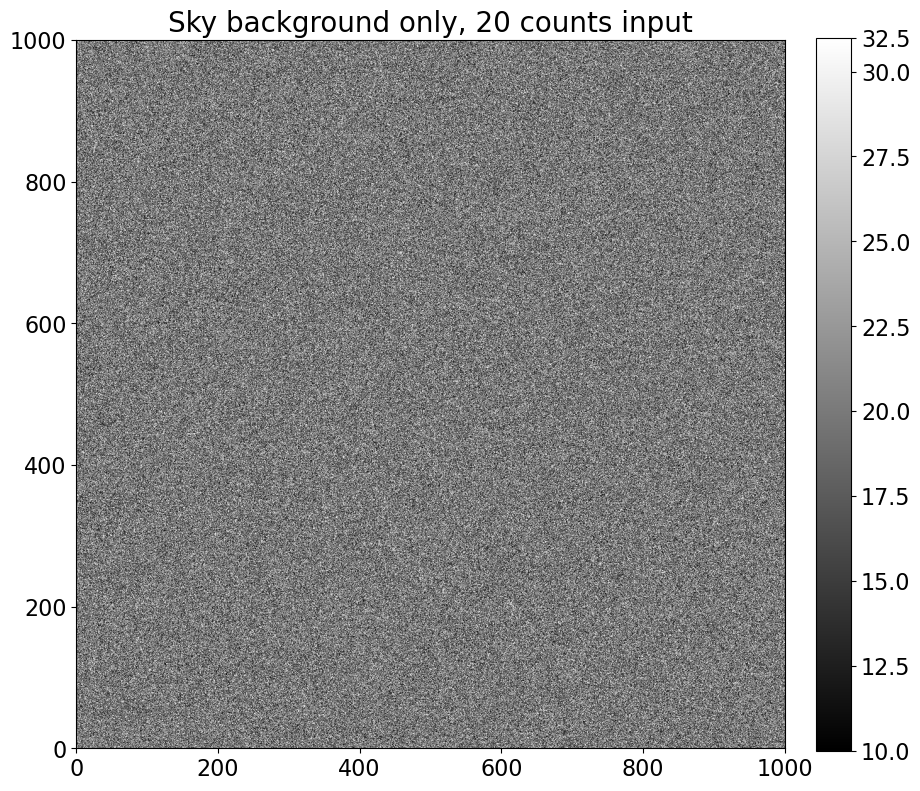
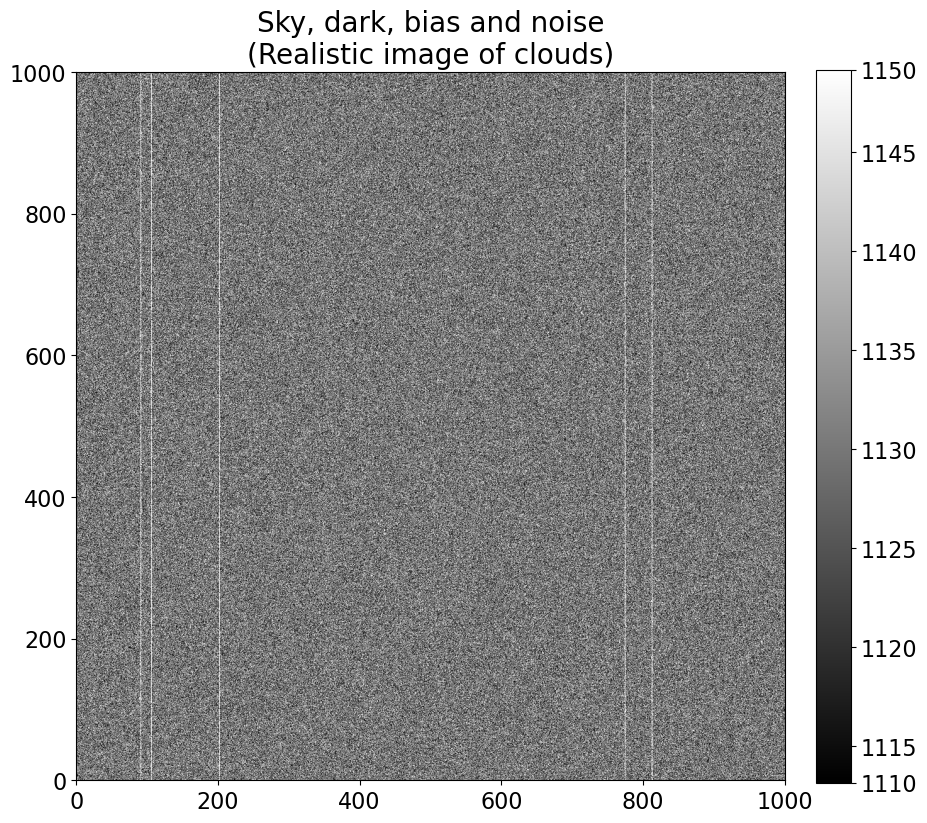
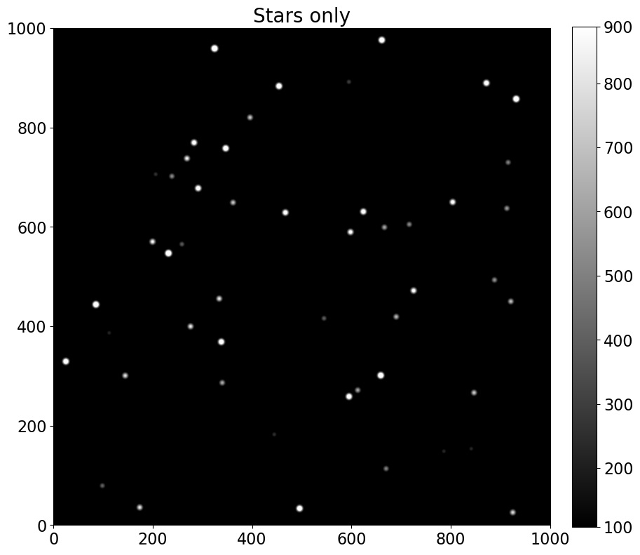
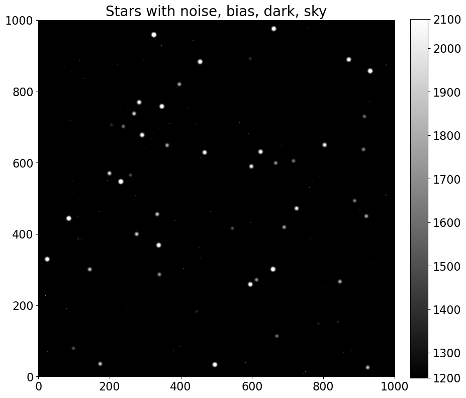

Создание искусственного (но реалистичного) изображения
Contents
1.2. Создание искусственного (но реалистичного) изображения#
Прежде чем перейти к рассмотрению реального изображения, давайте потратим несколько минут на то, чтобы разобраться, как выглядит каждый из различных источников отсчетов в искусственном изображении. Преимущество заключается в том, что мы можем контролировать, сколько отсчетов от каждого источника попадает в изображение. Рассмотрение экстремальных примеров может помочь построить понимание того, что происходит в ваших изображениях.
1.2.1. Импорты#
Почти все ноутбуки в этом руководстве будут начинаться с импорта пакетов Python, необходимых для этого ноутбука. Строки ниже настраивают matplotlib, широко используемый пакет для построения графиков.
import os
%matplotlib inline
from matplotlib import pyplot as plt
import numpy as np
from photutils.aperture import EllipticalAperture
# Use custom style for larger fonts and figures
plt.style.use('guide.mplstyle')
# Set up the random number generator, allowing a seed to be set from the environment
seed = os.getenv('GUIDE_RANDOM_SEED', None)
if seed is not None:
seed = int(seed)
# This is the generator to use for any image component which changes in each image, e.g. read noise
# or Poisson error
noise_rng = np.random.default_rng(seed)
Файл Python, на который ссылка ниже, convenience_functions.py, содержит несколько функций для удобного отображения изображений в ноутбуке.
Вы можете получить копию этого файла несколькими способами.
Если вы запускаете ноутбуки в браузере, то эта ссылка откроет файл в другой вкладке Jupyter Lab: convenience_functions.py. Вы также можете читать/редактировать его в предпочитаемом редакторе, но полезно знать, что редактирование файлов Python в среде Jupyter notebook возможно.
Если вы читаете книгу онлайн, вы можете посмотреть копию файла здесь: convenience_functions.py
Если вы хотите получить копию файла без копирования/вставки, вы можете скачать или клонировать этот репозиторий, включая ноутбуки и код, по адресу https://github.com/astropy/ccd-reduction-and-photometry-guide (нажмите на зеленую кнопку “Code” для получения опций)
from convenience_functions import show_image
1.2.2. Начало: пустое изображение#
Мы начнем с простейшего возможного изображения: массива нулей. Размеры изображения ниже выбраны так, чтобы соответствовать некоторым реальным изображениям, с которыми мы будем работать позже.
synthetic_image = np.zeros([1000, 1000])
show_image(synthetic_image, cmap='gray')

1.2.3. Добавление read noise#
Для каждого из элементов, которые мы добавляем, мы напишем небольшую функцию для добавления, чтобы было легче экспериментировать с различными значениями. Read noise имеет распределение Гаусса; стандартное отклонение Гаусса (в отсчетах) — это read noise (в электронах), деленный на gain (в электронах на отсчет). Read noise почти всегда задается в электронах.
Обратите внимание, что каждый раз при запуске этой функции вы будете получать разный набор пикселей, чтобы она вела себя как настоящий шум.
def read_noise(image, amount, gain=1):
"""
Generate simulated read noise.
Parameters
----------
image: numpy array
Image whose shape the noise array should match.
amount : float
Amount of read noise, in electrons.
gain : float, optional
Gain of the camera, in units of electrons/ADU.
"""
shape = image.shape
noise = noise_rng.normal(scale=amount/gain, size=shape)
return noise
plt.figure()
noise_im = synthetic_image + read_noise(synthetic_image, 5)
show_image(noise_im, cmap='gray')
<Figure size 1000x1000 with 0 Axes>

1.2.4. Bias#
Bias — это смещение напряжения (которое преобразуется в некоторое ненулевое количество отсчетов), добавляемое к каждому пикселю в изображении, чтобы гарантировать, что при преобразовании напряжений в отсчеты никогда не будет отрицательных отсчетов. Обратите внимание, что на изображении шума выше некоторые отсчеты положительные, а некоторые отрицательные, как и следовало ожидать для распределения Гаусса с центром в нуле. Однако значения пикселей обычно считываются из электроники как положительные числа. Добавление постоянного напряжения, которое соответствует постоянному положительному числу, гарантирует, что даже изображение, полностью состоящее из шума, не имеет отрицательных значений.
Значение bias примерно одинаково на всем чипе CCD, хотя нередко встречаются “плохие” столбцы и пиксели, в которых уровень bias постоянно отличается от остальной части чипа.
Для моделирования изображения bias мы создаем однородный массив и, опционально, добавляем некоторые “плохие” столбцы. Плохие столбцы здесь преувеличены, чтобы гарантировать их видимость.
Плохие столбцы в CCD обычно стабильны в течение очень длительного времени. Генератор случайных чисел используется ниже для выбора того, какие столбцы в нашем CCD являются плохими, но мы будем использовать seed, чтобы убедиться, что каждый раз при генерации bias мы получаем одни и те же плохие столбцы (и значения пикселей внутри плохих столбцов).
Эта стабильность делает возможным коррекцию эффекта в реальных изображениях.
Наконец, обратите внимание, что bias не зависит от времени экспозиции. Это потому, что экспозиция bias — это экспозиция нулевой длительности, при которой камера просто считывает чип.
def bias(image, value, realistic=False):
"""
Generate simulated bias image.
Parameters
----------
image: numpy array
Image whose shape the bias array should match.
value: float
Bias level to add.
realistic : bool, optional
If ``True``, add some columns with somewhat higher bias value (a not uncommon thing)
"""
# This is the whole thing: the bias is really suppose to be a constant offset!
bias_im = np.zeros_like(image) + value
# If we want a more realistic bias we need to do a little more work.
if realistic:
shape = image.shape
number_of_colums = 5
# We want a random-looking variation in the bias, but unlike the readnoise the bias should
# *not* change from image to image, so we make sure to always generate the same "random" numbers.
rng = np.random.RandomState(seed=8392) # 20180520
columns = rng.randint(0, shape[1], size=number_of_colums)
# This adds a little random-looking noise into the data.
col_pattern = rng.randint(0, int(0.1 * value), size=shape[0])
# Make the chosen columns a little brighter than the rest...
for c in columns:
bias_im[:, c] = value + col_pattern
return bias_im
bias_only = bias(synthetic_image, 1100, realistic=True)
show_image(bias_only, cmap='gray', figsize=(10, 10))
plt.title('Bias alone, bad columns included', fontsize='20')
Text(0.5, 1.0, 'Bias alone, bad columns included')

bias_noise_im = noise_im + bias_only
show_image(bias_noise_im, cmap='gray', figsize=(10, 10))
plt.title('Realistic bias frame (includes read noise)', fontsize='20')
Text(0.5, 1.0, 'Realistic bias frame (includes read noise)')

1.2.5. Dark current#
Dark current зависит от температуры сенсора. Количество dark counts в изображении также зависит от времени экспозиции. Dark current обычно очень мал (0.1 электронов/пиксель/секунда или меньше). Dark counts в этой функции рассчитываются путем умножения входного dark current на входное время экспозиции после преобразования единицы dark current из электронов в отсчеты с использованием gain.
Небольшая доля пикселей является “горячими”: их dark current намного больше, чем у остальных пикселей. Горячие пиксели моделируются здесь путем выбора подмножества пикселей, имеющих dark current в 10,000 раз больше, чем входной dark current. Это преувеличивает эффект, чтобы сделать эти пиксели более заметными.
Расположение и ток горячих пикселей обычно стабильны в течение длительных периодов времени, что делает простым удаление их эффекта из научных изображений путем их вычитания.
Dark frame (или dark изображение) — это изображение, сделанное при закрытом затворе камеры.
Функция ниже моделирует только dark current, т.е. она не моделирует read noise, который является частью любого реального dark frame с CCD.
Обратите внимание, что моделированное dark изображение выглядит зашумленным, хотя оно не включает read noise. Это потому, что число генерируемых электронов подчиняется распределению Пуассона.
def dark_current(image, current, exposure_time, gain=1.0, hot_pixels=False):
"""
Simulate dark current in a CCD, optionally including hot pixels.
Parameters
----------
image : numpy array
Image whose shape the cosmic array should match.
current : float
Dark current, in electrons/pixel/second, which is the way manufacturers typically
report it.
exposure_time : float
Length of the simulated exposure, in seconds.
gain : float, optional
Gain of the camera, in units of electrons/ADU.
strength : float, optional
Pixel count in the cosmic rays.
"""
# dark current for every pixel; we'll modify the current for some pixels if
# the user wants hot pixels.
base_current = current * exposure_time / gain
# This random number generation should change on each call.
dark_im = noise_rng.poisson(base_current, size=image.shape)
if hot_pixels:
# We'll set 0.01% of the pixels to be hot; that is probably too high but should
# ensure they are visible.
y_max, x_max = dark_im.shape
n_hot = int(0.0001 * x_max * y_max)
# Like with the bias image, we want the hot pixels to always be in the same places
# (at least for the same image size) but also want them to appear to be randomly
# distributed. So we set a random number seed to ensure we always get the same thing.
rng = np.random.RandomState(16201649)
hot_x = rng.randint(0, x_max, size=n_hot)
hot_y = rng.randint(0, y_max, size=n_hot)
hot_current = 10000 * current
dark_im[(hot_y, hot_x)] = hot_current * exposure_time / gain
return dark_im
dark_exposure = 100
dark_cur = 0.1
dark_only = dark_current(synthetic_image, dark_cur, dark_exposure, hot_pixels=True)
show_image(dark_only, cmap='gray')
title_string = 'Dark current only, {dark_cur} $e^-$/sec/pix\n{dark_exposure} sec exposure'.format(dark_cur=dark_cur, dark_exposure=dark_exposure)
plt.title(title_string, fontsize='20');

Обратите внимание, что центральное значение colorbar изображения равно 10, произведению dark current и времени экспозиции.
dark_bias_noise_im = bias_noise_im + dark_only
show_image(dark_bias_noise_im, cmap='gray')
plt.title('Realistic dark frame \n(with bias, read noise)', fontsize='20')
Text(0.5, 1.0, 'Realistic dark frame \n(with bias, read noise)')

1.2.6. Фон неба#
Количество фона неба зависит от атмосферных условий (влажности, наличия легких облаков, пожаров с подветренной стороны от обсерватории), источников света на небе (Луна) и источников света в окружающей области (города). Он может быть однородным по всему кадру или нет, в зависимости от условий.
Функция ниже генерирует некоторый фон неба. Каждый раз при ее запуске вы будете получать немного разные результаты (даже если вы сохраняете желаемое количество отсчетов неба одинаковым), потому что отсчеты от источника света следуют распределению Пуассона.
Количество фона неба прямо пропорционально времени экспозиции. Однако в функции ниже вы вводите желаемое количество отсчетов неба.
Наличие градиента неба по изображению совсем не необычно, но этот эффект здесь не моделируется.
def sky_background(image, sky_counts, gain=1):
"""
Generate sky background, optionally including a gradient across the image (because
some times Moons happen).
Parameters
----------
image : numpy array
Image whose shape the cosmic array should match.
sky_counts : float
The target value for the number of counts (as opposed to electrons or
photons) from the sky.
gain : float, optional
Gain of the camera, in units of electrons/ADU.
"""
sky_im = noise_rng.poisson(sky_counts * gain, size=image.shape) / gain
return sky_im
sky_level = 20
sky_only = sky_background(synthetic_image, sky_level)
show_image(sky_only, cmap='gray')
plt.title('Sky background only, {} counts input'.format(sky_level), fontsize=20)
Text(0.5, 1.0, 'Sky background only, 20 counts input')

sky_dark_bias_noise_im = dark_bias_noise_im + sky_only
show_image(sky_dark_bias_noise_im, cmap='gray')
plt.title('Sky, dark, bias and noise\n(Realistic image of clouds)', fontsize=20);

1.2.6.1. Сводка фонов в астрономическом изображении#
Обратите внимание, что центральное значение пикселей в “реалистичном” изображении облаков выше, около 1130, является суммой:
уровня bias (1100 отсчетов)
dark current (10 отсчетов, что составляет 0.1 e/сек/пикс \(\times\) 100 сек, деленное на gain в 1 e/отсчет)
отсчетов неба (20 отсчетов)
Распределение отсчетов вокруг этого определяется read noise (5 электронов) и ожидаемой шириной распределения Пуассона для отсчетов неба, которая является квадратным корнем из числа этих отсчетов, \(\sqrt{20} \approx 4.5\). Сложите их в квадратуре, и вы получите около 6.7.
1.2.6.2. Интерактивное демо#
Ячейка ниже настраивает интерактивное демо, которое позволяет вам изменять значение read noise и других параметров, чтобы увидеть эффект, который их изменение оказывает на результирующее изображение.
from ipywidgets import interactive, interact
# @interact(bias_level=(1000,1200,10), dark=(0.01,1,0.01), sky_counts=(0, 300, 10),
# gain=(0.5, 3.0, 0.1), read=(0, 50, 2.0),
# exposure=(0, 300, 10))
def complete_image(bias_level=1100, read=10.0, gain=1, dark=0.1,
exposure=30, hot_pixels=True, sky_counts=200):
synthetic_image = np.zeros([500, 500])
show_image(synthetic_image +
read_noise(synthetic_image, read) +
bias(synthetic_image, bias_level, realistic=True) +
dark_current(synthetic_image, dark, exposure, hot_pixels=hot_pixels) +
sky_background(synthetic_image, sky_counts),
cmap='gray',
figsize=None)
i = interactive(complete_image, bias_level=(1000,1200,10), dark=(0.0,1,0.1), sky_counts=(0, 300, 50),
gain=(0.5, 3.0, 0.25), read=(0, 50, 5.0),
exposure=(0, 300, 30))
for kid in i.children:
try:
kid.continuous_update = False
except KeyError:
pass
#i
1.2.7. Добавление “звезд”#
“Звезды”, которые мы добавим ниже, по сути являются просто (круглыми) источниками Гаусса. Функция, которая выполняет большую часть работы, взята из photutils, к которой мы вернемся позже для выполнения фотометрии.
def stars(image, number, max_counts=10000, gain=1):
"""
Add some stars to the image.
"""
from photutils.datasets import make_model_image, make_model_params
from photutils.psf import CircularGaussianPSF
psf_model = CircularGaussianPSF(fwhm=9.4)
max_counts *= 100 # approx. peak amplitude to flux
params = make_model_params(image.shape, n_sources=number,
flux=(max_counts / 10, max_counts),
min_separation=20,
border_size=20, seed=12345)
return make_model_image(image.shape, psf_model, params,
progress_bar=True)
stars_only = stars(synthetic_image, 50, max_counts=2000)
show_image(stars_only, cmap='gray', percu=99.9)
plt.title('Stars only'.format(stars_only), fontsize=20)
Text(0.5, 1.0, 'Stars only')

stars_with_background = sky_dark_bias_noise_im + stars_only
show_image(stars_with_background, cmap='gray', percu=99.9)
plt.title('Stars with noise, bias, dark, sky'.format(stars_with_background), fontsize=20)
Text(0.5, 1.0, 'Stars with noise, bias, dark, sky')

1.2.7.1. Обсуждение#
На изображении выше однопиксельные яркие точки — это горячие пиксели, в то время как остальные точки, размер которых больше пикселя, — это смоделированные звезды.
1.2.8. Резюме#
Все, что мы включили до сих пор, было аддитивным. Символически смоделированное изображение выше было построено следующим образом:
Извлечение науки (т.е. звезд) в принципе является вопросом вычитания:
Есть несколько осложнений:
Есть мультипликативные эффекты, которые будут обсуждаться в следующем ноутбуке.
Способ измерить каждую из вещей, которые нам нужно вычесть (bias и dark current), — это сделать изображения, каждое из которых включает read noise. Это можно минимизировать, объединив несколько калибровочных изображений.
Нет способа вычесть read noise, потому что он случаен.